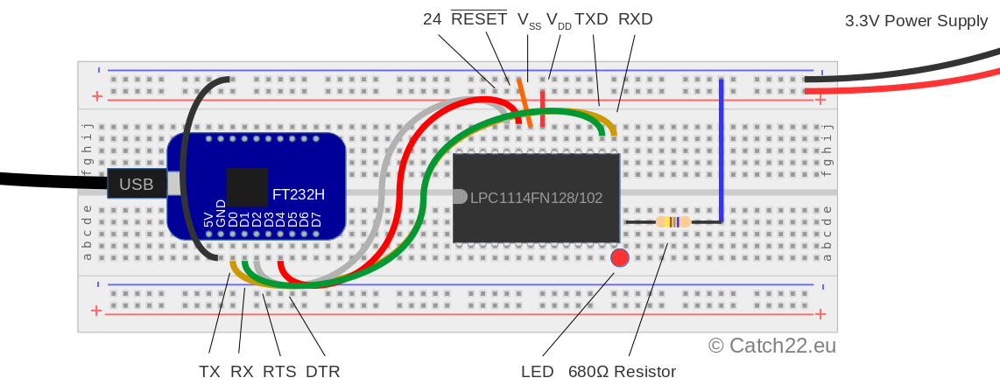

Introduction
This web page guides in programming the NXP LPC1100 ARM microprocessor series. The aim is to provide a compelling, easy to use method using an open source toolchain setup next to the commercially available products like Keil, mbed, LPCXpresso, etc. As basis for this tutorial is a Debian based system, which also includes the popular Ubuntu Distribution. By making use of the available open source packages in this distribution, a generic way of setting up a toolchain for other distributions should be straightforward as well. As an example, the LPC1114 MCU is used to show how to blink a LED. This MCU is one of 32-bit ARM Cortex MO processors available in DIP format, which makes it easy to use for prototyping.
Setting up the GNU Toolchain
The set of programs used to compile and flash code to a microcontroller is named toolchain. As of writing, the standard GNU compiler toolchain can be used to compile source code into executable binaries. In order to obtain the toolchain it is cimply a matter of installing the correct package. On Debian, and Debian-based distributions like Ubuntu, Mint, Raspbian, etc, this can be done either via a package manager like Synaptic (which is a front-end for apt), or using apt directly on the command line:
sudo apt-get install gcc-arm-none-eabi
Some background here: a special version of the gcc compiler is required for compiling code for a target processor other than the host computer. This is called cross-compiling. That explains the gcc-arm version of the compiler. The “none” version is needed to indicate the use without an operating system (also known as baremetal programming). If we were to compile a program used for an OS, some parts of the program can / should make use of the OS provided functions, for instance when allocating and referencing memory. Without an OS, these standard function need to be linked and added to the binary you are compiling. This will also install the other required packages like binutils and the c-library.
Next to this, in order to flash your binary to the MCU, a program called lpc21isp will be used:
sudo apt-get install lpc21isp
Acquire the LPC libraries
The example used here, makes use of the open source libraries provided by NXP for the selected MCU. These can be downloaded from the NXP site directly, or by downloading the same library via the created git repository. The latter also requires the git package to be installed:
sudo apt-get install git
after which the LPC library can be cloned:
git clone https://github.com/catch22eu/LPC11xx-LPCXpresso-CMSIS
Next to that, the source code of the example below can now also be installed (without changing directory) from the previous command:
git clone https://github.com/catch22eu/LPC1114_BlinkLED
Note that this also provides the needed linker script and makefile for using the LPC library with the GNU compiler.
Setting up the programmer and LPC1114
In this case, the Adafruit FT232H Breakout board is used to program the LPC1114. The FT232H is used in this case as a USB to UART modem. Likely, other UART’s can be used as well. The LPC MCU has a bootloader which check upon reset (when Reset pin 23 is pulled low), if pin 24 is pulled low as well. In that case, pin 15/16 can be connected to a UART device (with RX and TX lines) to upload the binary, see figure below. The lpc21isp program can be instructed to use the additional DTR and RTS UART signals to control the reset – and bootloader pin. Next to that, the LPC needs to be powered by a 3.3V power source and grounded with the UART device. Here a breadboard is used to achieve all needed connections.
Also, as explained here, the udev rules can be adapted to make the usb device read/writeable by a normal user instead of root (otherwise the commands related to the FT232H board need to be performed with sudo
Hello World Example
main.c
The first example here is using the mentioned LPC libraries, but not making use of the hardware abstraction layers for the sake of simplicity. The main.c file code is just less than 20 lines to blink an LED:
#include "LPC11xx.h" #define GPIO1DATA (*((volatile uint32_t *) 0x50013FFC )) #define GPIO1DIR (*((volatile uint32_t *) 0x50018000 )) #define SYSAHBCLKCTRL (*((volatile uint32_t *) 0x40048080 )) int main(void) { // set pin 5 of GPIO1 as output GPIO1DIR |= (1 << 5); while(1) { // toggle bit 5 of GPIO1 GPIO1DATA ^= (1 << 5); //wait loop for (int i=0; i<1000000;i++); } }
Makefile
The Makefile is way more complicated, see this link to show the complete Makefile. In essence, the previous main.c file is being compiled by the Makefile with the following one big command:
arm-none-eabi-gcc -c -Wall -Os -std=c99 -specs=nosys.specs -DUSE_OLD_STYLE_DATA_BSS_INIT -mcpu=cortex-m0 -mthumb -Wl,-Map,output.map -I../LPC11xx-LPCXpresso-CMSIS/CMSISv2p00_LPC11xx/inc/ -DCORE_M0 -DENABLE_UNTESTED_CODE main.c -o main.o
This shows the use of the gcc compiler to take main.c as input, and produce main.o as output using the c99 standard. ARM specific settings are -mcpu-cortex-m0 and and -mthumb, which indicate the type of ARM core is cimpiled for and the mthumb instruction set. The LPCXpresso library path is defined with the unclude command -I. Last but not least are some defines (-D...) which need to be set to indicate specific preprocessor directives: USE_OLD_STYLE_DATA_BSS_INIT which is related to the linker script style, and CORE_M0 and ENABLE_UNTESTED_CODE.
Next to the main.c file, also the two files in the LPC library directores are compiled: LPC11xx-LPCXpresso-CMSIS/CMSISv2p00_LPC11xx/src/core_cm0.c, and LPC11xx-LPCXpresso-CMSIS/CMSISv2p00_LPC11xx/src/system_LPC11xx.c.
In a separate step, the created object files are linked together with using the linker script lpc1114.ld. This linker script is also tightly related to the LPC library. In brief, the memory of the LPC1114 is defined as:
MEMORY
{
flash (rx) : org = 0x00000000, len = 32k
ram (xrw) : org = 0x10000000, len = 4k
}
The next important part is the reference to two constructs:
KEEP (*(.isr_vector));
KEEP (*(.after_vectors));
What this actually does is ensure the vector table defined in the file cr_startup_lpc11.c is located at the beginning of flash memory (it contains the beginning of the stack pointer _vStackTop (the top of the RAM), and the Program Counter (where in flash the first insruction is located)), and that the startup instructions are located after that. This can be seen in this part of the startup code where tha same .isr_vecor is referenced, as well as _vStackTop:
//***************************************************************************** // // The vector table. Note that the proper constructs must be placed on this to // ensure that it ends up at physical address 0x0000.0000. // //***************************************************************************** extern void (* const g_pfnVectors[])(void); __attribute__ ((section(".isr_vector"))) void (* const g_pfnVectors[])(void) = { &_vStackTop, // The initial stack pointer ResetISR, // The reset handler NMI_Handler, // The NMI handler HardFault_Handler, // The hard fault handler 0, // Reserved 0, // Reserved 0, // Reserved
Also, the pointer ResetISR is used here, which ensures the correct pointer to the startup code. Some other references which are beginning with an underscore like _etext are also referenced in the cr_startup_lpc11.c file. It is recommended to check this file especially as it's the core of the startup of the MCU. The routines defined in the ResetISR function in the startup code also start the SystemInit() function (but this needs to be switched on by explicitly defining __USE_CMSIS), and finally hand over execution to the main.c code.
The last thing the Makefile does is copy the .elf file into a .bin file and flash the image after successfull compilation with the command:
lpc21isp -control -bin main.bin /dev/ttyUSB0 115200 14746
Note here that the checksum, which is used in LPC devices, is also calculated and flashed by lpc21isp utility. Happy coding!